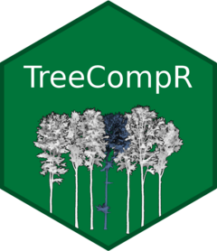
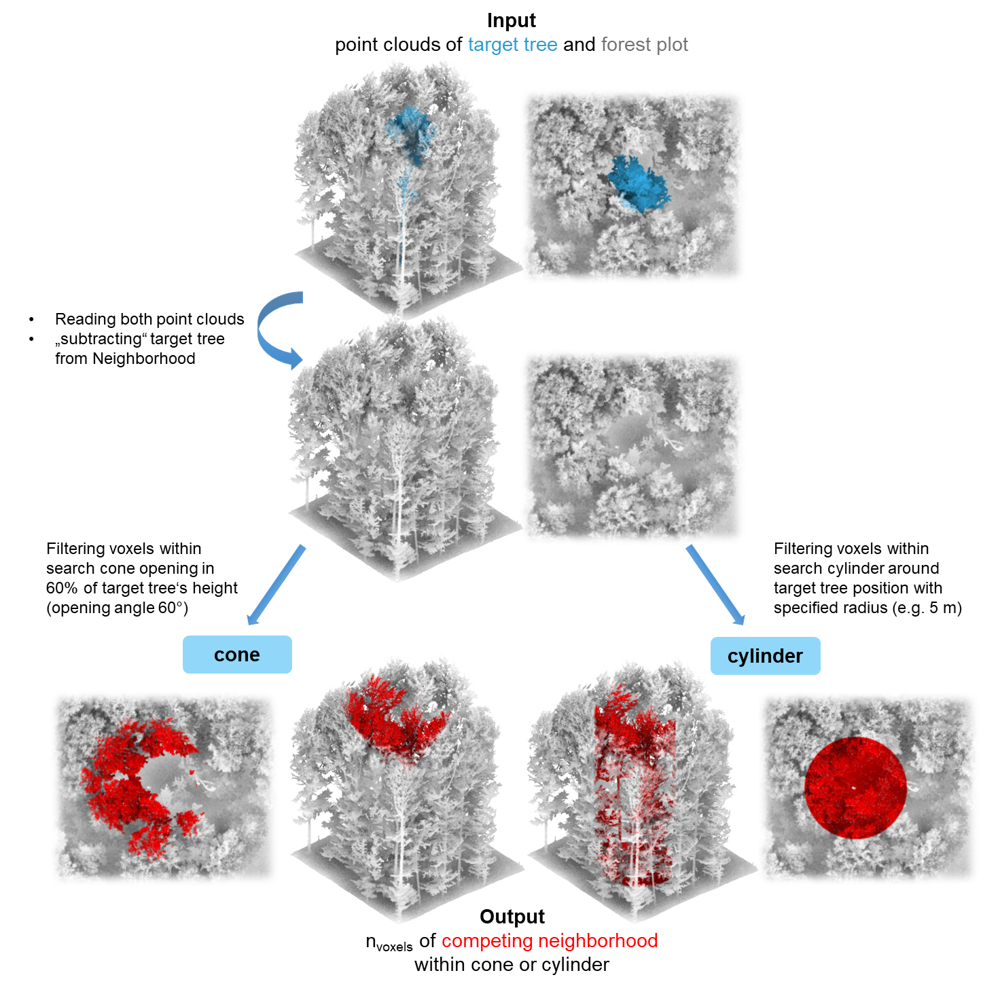

 R Package for calculating distance-dependent or point cloud-based individual tree competition indices
This R package is designed for the quantitative analysis of individual tree competition within forest ecosystems. It accepts inputs such as LiDAR point clouds (as tabular data with x, y and z coordinates, .las/.laz files or .ply files) of forest plots and individual target trees, or inventory tables (including tree ID, x and y coordinates, diameter and/or tree height or other size parameters as crown projected area). Through the use of various competition indices, it enables the assessment and measurement of competition between trees, providing valuable insights for forest ecology, inventories, and forest management strategies. This package facilitates a systematic approach to understanding interactions and resource competition among trees and enables informed decision making in forest management.
Installation
You can install the stable version (main branch) as well as the current development version of TreeCompR (development branch: more up-to-date, but potentially unstable) from GitHub with:
# install.packages("devtools")
# get stable version
devtools::install_github("juliarieder/TreeCompR")
# get development branch
devtools::install_github("juliarieder/TreeCompR", ref = "development")Overview
TreeCompR can read point clouds or inventory tables and quantify tree competition in different ways:
- Functions for point-cloud based methods
-
compete_pc()quantifies tree competition from point clouds using the cone or cylinder method (see Metz et al. 2013; Seidel et al. 2015) -
read_pc()reads 3D point clouds from .las/.laz files, .ply files and text-only file formats such as .txt or .csv, and converts LAS objects and data.frames to a TreeCompR compatible format -
tree_pos()computes the base position and height of target tree point clouds
-
- Functions for inventory-based methods
-
compete_inv()quantifies size- and distance-dependent competition using inventory data based on a series of published indices -
read_inv()reads and validates inventory tables from data.frames, or reads tabular data directly from text-only file sources such as .txt or .csv -
define_target()can be used to define for which trees within a plot the competition should be quantified incompete_inv() -
plot_target()check and validate the tree position(s) and the surrounding trees after defining them withdefine_target()
-
Methodology of the point cloud-based approach
LiDAR point clouds can be used directly to quantify the competition exerted by neighboring trees on the target tree. For this purpose, the target tree for which the competition is to be determined should be segmented beforehand. Since it is crucial whether a part of the point cloud is classified as “competing” or as part of the target tree itself, a manual segmentation (e.g. in CloudCompare) is recommended as it tends to be much more accurate. Read more about the pre-processing in our tutorial for the point-cloud-based approach.

Examples
Point-cloud based tree competition metrics
With compete_pc(), it is easy to quantify the
competition with compete_pc() for one target tree, in this
example using the cone method (which counts the amount of voxels
belonging to competitor trees situated in a cone opening at 60 % of the
target tree’s height in an angle of 60 degrees):
library(TreeCompR)
## insert path to point cloud of the forest plot and to the target tree
compete_pc(forest_source = "data/neighborhood.las",
tree_source = "data/tree.las",
comp_method = "cone",
h_cone = 0.6,
print_progress = "none") # suppress messages
#> -------------------------------------------------------------------
#> 'compete_pc' class point-cloud based competition indices for 'tree'
#> -------------------------------------------------------------------
#> target height_target center_position CI_cone h_cone
#> <char> <num> <char> <int> <num>
#> 1: tree 22.8 crown center 15330 0.6Equivalently, the cylinder method can be used to count the amount of voxels belonging to competitor trees within a cylinder around the target tree with 5 m radius.
## or the cylinder method with radius 5 m
compete_pc(forest_source = "data/neighborhood.txt",
tree_source = "data/tree.txt",
comp_method = "cylinder",
cyl_r = 5,
print_progress = "none") # suppress messages
#> -------------------------------------------------------------------
#> 'compete_pc' class point-cloud based competition indices for 'tree'
#> -------------------------------------------------------------------
#> target height_target center_position CI_cyl cyl_r
#> <char> <num> <char> <int> <num>
#> 1: tree 22.8 crown center 100512 5While these examples use the default settings of
compete_pc(), the function is highly customizable and able
to deal with a large number of different file formats and object types,
the majority of which are identified and read automatically. In cases
where this is not possible due to non-standard file structures, point
clouds can be loaded and pre-processed outside of
compete_pc() using read_pc() with custom
settings or other functions and then passed on to
compete_pc(). More information about these functions an be
found in the point cloud tutorial.
Size- and distance-dependent tree competition metrics
Analogously, distance-dependent competition indices can be quantified
using compete_inv(), which can read any text file with
spatial positions of trees and measures of their size (conventionally,
diameter at breast height or tree height).
As it is usually not advisable to compute competition indices for all
trees in a plot because there will be strong edge effects when the
sample of trees does not comprise the entire forest stand, for
compete_inv() it is necessary to explicitly specify target
trees. In cases where these are not a priori defined by the design of
the study, it is possible to automatically identify target trees using
the define_target() function.
In the following example, the inventory is first read with
read_inv(), and then target trees are identified with
define_target(). Again, read_inv() is highly
customizable, and allows a large amount of different input formats and
also manual identification of the names of the important variables (x
and y coordinates and tree size).
## read forest inventory file from source
plot <- read_inv("../tests/testthat/testdata/inventory.csv", verbose = FALSE)
## define target trees
targets <- define_target(plot, target_source = "buff_edge", radius = 10)With target_source = "buff_edge", target trees are
defined as the trees who are in a distance of more than one search
radius (in this case, 10 m) from the border of the forest stand (which
is approximated by a concave hull). There are many other possible
settings for target_source, such as specifying target trees
by their IDs, by logical subsetting, or as a separate set of
coordinates. It is also possible to define all trees as target trees,
but unless your dataset contains all trees in the forest this is almost
never a good idea due to the obvious edge effects.
It is possible to plot the selection of target trees and the
surrounding neighborhood for visual inspection using
plot_target():
## plot the positions of the target trees and trees at the border
plot_target(targets)
In this example, the neighborhood was already chosen to only contain a single tree within a 10 m buffer from the border, so in consequence, only a single tree was identified as a potential target tree.
As the target_inv object that results from a call to
define_target() contains the information about all trees in
the plot as well as their status as target or neighbor tree, it can
directly be fed to compete_inv() to calculate the
competition indices for our one target tree without having to specify
target trees explicitly:
## get competition indices for the selected target trees
compete_inv(inv_source = targets,
radius = 10,
method = "all_methods")
#> ------------------------------------------------------------
#> 'compete_inv' class distance-based competition index dataset
#> No. of target trees: 1 Source inventory size: 48 trees
#> Target source: 'buff_edge' (10 m) Search radius: 10 m
#> ------------------------------------------------------------
#> id x y dbh CI_Hegyi CI_RK1 CI_RK2
#> <char> <num> <num> <num> <num> <num> <num>
#> 1: 48 0.102 -0.494 0.244 4.388 1.068 1.581Choosing method = "all_methods" computes all available
metrics for the chosen data source. As the dataset only contains
diameters, but no tree heights, in this case it is the Hegyi index as
well as the RK1 and RK2 indices (see documentation of
compete_inv() and our paper for details). For more examples
on how to customize compete_inv(), have a look at our tutorial
for the inventory-based approach.